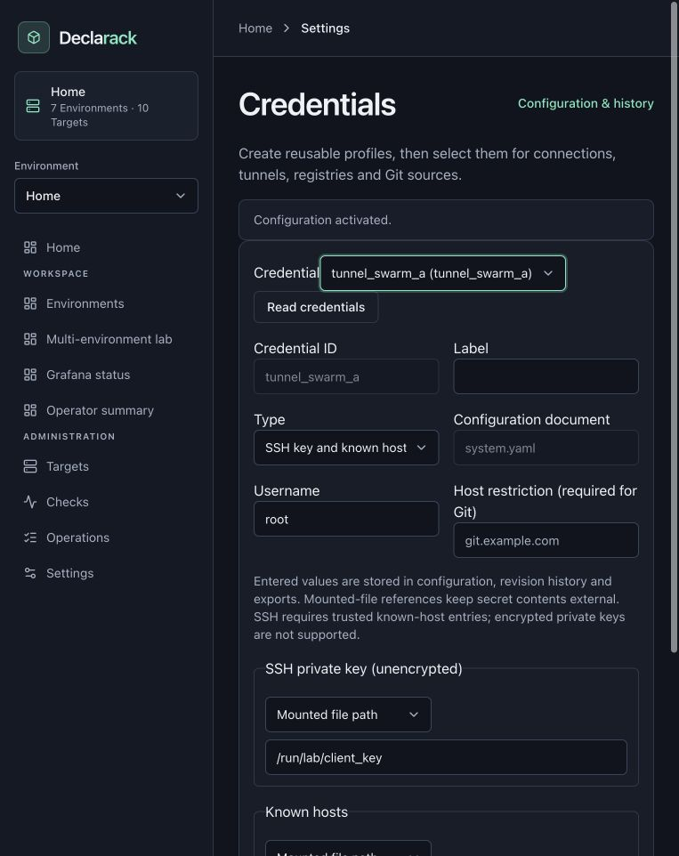

Named credentials¶
All runtime connection credentials live under the top-level credentials mapping.
Targets, tunnels, registry host maps and Git allow-lists reference profile IDs.
Mounted file paths belong on profiles too; they are not an alternative target
credential mechanism. This is a breaking configuration change.
GUI workflow¶
- Open Settings → Credentials → Create credential.
- Choose a stable ID, optional label, and type: bearer token, username/password (including a PAT), or SSH key/known-hosts.
- For each secret field, choose Enter or upload value or Mounted file path. Text uploads and inline fields accept up to 64 KiB. A file reference must be an absolute path visible to the Declarack process/container. Unused file profiles can be saved before a mount is present; a connection using them must have the file available when validated/activated.
- Set the username for basic/SSH credentials. Set a host for Git credentials; optional hosts on other profiles restrict their destination too.
- Validate & review credential → Save configuration → Activate configuration. Profile edits use the same revision, source ownership, history, import and write-back workflow as other configuration documents. Split-document profiles must be consolidated in YAML first.
- Open Add integration, select the profile from its type-filtered credential selector, test the connection, then save and activate the target.
The editor shows which targets, tunnels, Git allow-lists, registries and login settings reference a profile. Referenced profiles cannot be removed. Removing an unused profile requires confirmation, review and save; it does not delete a mounted file. Existing connection references are edited in target YAML; Add integration selects profiles for new targets.
Entered values are stored in database configuration revisions, history and exports, and in YAML files if write-back is enabled. They are not held in a separate encrypted vault. File-backed profiles store only the path, leaving the secret outside the database. Protect the database, exports and any write-back files accordingly. Normal target metadata and setup selectors expose profile IDs and labels, not values. The administrator's YAML/configuration export remains complete. Profile IDs cannot be renamed in the form; update references in YAML when changing an ID.

Schema¶
credentials:
manager:
type: ssh
label: Production manager
username: root
private_key: {file: /run/secrets/manager_key}
known_hosts: {file: /etc/declarack/known_hosts}
api_token:
type: token
label: Inventory API
host: inventory.example.com
token: {file: /run/secrets/inventory_token}
deployment:
type: basic
label: Registry login
username: deploy
password: {file: /run/secrets/registry_password}
git_repository:
type: basic
username: deploy
host: git.example.com
password: {file: /run/secrets/git_pat}
Each secret mapping contains exactly one of file or value. For an entered
secret use password: {value: "replace-with-your-secret"}, for example. SSH inline
keys and known-host entries use YAML literal blocks (value: |) to preserve lines.
The type, type-specific fields, optional label and optional host are the only
profile keys. Unknown fields and incompatible references fail validation.
| Type | Required fields | Used by |
|---|---|---|
token |
token: {file: ...} or {value: ...} |
HTTP Bearer authentication |
basic |
username, password: {file: ...} or {value: ...} |
HTTP Basic, registry login, HTTPS Git/PAT, first-administrator bootstrap |
ssh |
username, private_key, known_hosts (each file/value) |
SSH hosts, Docker/HTTP SSH tunnels, SSH Git |
References¶
targets:
manager:
connection: docker_socket
swarm: true
ssh_tunnel:
host: manager.example.com
credential: manager
features: [services, stacks]
registry_credentials:
ghcr.io: deployment
git_credentials: [git_repository]
inventory:
connection: http
base_url: https://inventory.example.com
credential: api_token
features: []
ssh_host:
connection: ssh
host: manager.example.com
credential: manager
features: [host_metrics, ssh_commands]
These references assume the profiles above. HTTP credentials require HTTPS,
including HTTP APIs reached through SSH tunnels. SSH always verifies host keys;
known-hosts content must already be trusted. Encrypted SSH private keys/passphrase
prompts are not supported. An optional profile host must match the destination
(hostname with optional port). Git credentials require a host and matching
transport; SSH Git URLs must use the profile's username. Registry maps scope a
basic profile to an explicit registry hostname; an optional profile host must
match it. Reusing a profile does not make it available to a target's Git operations
unless its ID is explicitly included in that target's git_credentials list.
Inline SSH material is written only to private process-lifetime files (directory 0700, files 0600) for OpenSSH and removed on normal process exit. These are reconstructable runtime files, not another persistent credential store. Registry CLI auth still uses short-lived Docker configuration; Git auth remains isolated from registry auth. File-backed registry/Git credentials are read again when used; HTTP authorization is resolved when configuration is loaded/activated. Rotate the file and activate/restart for connections that cache credential content.
Login and bootstrap¶
A local-account installation can seed its first administrator from a basic profile:
credentials:
login:
type: basic
username: admin
password: {file: /run/secrets/declarack_admin_password}
auth:
provider: local
bootstrap_credential: login
The profile is read only when the users table is empty. It is not a recurring
login credential or HTTP Basic Auth identity. Without a reference, use
DECLARACK_ADMIN_USERNAME (default admin) and either DECLARACK_PASSWORD_FILE
or DECLARACK_PASSWORD for that initial account. Once users exist, changing these
inputs does not reset passwords, and the bootstrap password mount is no longer
required. Use Settings → Administrators or the host recovery command instead.
Accounts and their password hashes are stored separately from connection profiles.
Prefer mounted-file references: inline bootstrap secrets remain in system YAML, configuration history and exports even after the account is seeded. Account password changes do not rewrite that profile. See administrators, sessions and TLS for setup and recovery. Database URLs and configuration-provider Git tokens remain deployment inputs; they cannot depend on a profile inside a source that has not yet been opened.
Breaking changes¶
Move SSH user, identity_file and known_hosts_file off targets/tunnels and into
an SSH profile, then set credential. Replace HTTP bearer_token_file with a
profile reference. Replace target-local registry profile objects with host-to-ID
maps, and target-local Git profile objects with a list of allowed global IDs.
Replace auth.provider: basic with local and auth.credential with
auth.bootstrap_credential. Move older auth.username / auth.password_file
into a referenced basic bootstrap profile or bootstrap environment variables.
HTTP Basic Auth clients must migrate to login cookies and CSRF/action headers.
New stack sources use general Git and a named credential; the per-stack GitHub username/PAT editor and GitHub-tag creation mode are removed.
Historical legacy records may remain in storage, but no new per-stack secrets are
accepted. Old configuration/history drafts using the removed fields must be
converted before validation; there is no automatic runtime compatibility layer.
See database storage, Git and registry execution, and integration templates.